47 Grundlagen der Versuchsplanung
Version vom November 21, 2022 um 09:45:00

Ein Teil der Beispiele basiert auf DSFAIR von P. Schmidt und wurde von mir angepasst und vereinfacht. Hier findet sich auch weiterführende Literatur und weitere Beispiele.
Im Weiteren schauen wir uns auch das R Paket agricolae mit Beispielen von Experimental Designs with agricolae genauer einmal an.
In diesem Kapitel wollen wir uns mit der Auswertung von verschiedenen experiemnetellen Designs beschäftigen. Wir schauen uns dafür jeweils eine mögliche Visualisierung an und bauen uns dann die Daten künstlich nach. Warum eigentlich künstliche Daten? Das heist wir erschaffen uns Daten wo wir genau wissen, wie der Mittelwert und die Standardabweichungen in den einzelnen Gruppen sind. Warum ist das hilfreich? Dadurch das wir wissen, dass der Mittelwertsunterschied zwischen Gruppe \(A\) und Gruppe \(B\) mit dem Effekt von \(\Delta_{A-B} = 5\) erschaffen wurde, können wir dann auch die Ausgaben der Funktionen besser bewerten.
Dieses Kapitel ist nicht zu verstehen, wenn du nicht schon was über Statistik weist. Im Zweifel musst du nochmal in die vorherigen Kapitel zurückspringen um nochmal die Konzepte nachzulesen.
47.1 Genutzte R Pakete für das Kapitel
Wir wollen folgende R Pakete in diesem Kapitel nutzen.
pacman::p_load(tidyverse, magrittr, conflicted, broom,
see, emmeans, multcomp, scales, performance,
effectsize, parameters)
conflict_prefer("select", "dplyr")
conflict_prefer("filter", "dplyr")
conflict_prefer("mutate", "dplyr")
cbbPalette <- c("#999999", "#E69F00", "#56B4E9", "#009E73",
"#F0E442", "#0072B2", "#D55E00", "#CC79A7")Am Ende des Kapitels findest du nochmal den gesamten R Code in einem Rutsch zum selber durchführen oder aber kopieren.
47.2 Complete randomized design (CRD)
Das komplette randomizierte Design (eng. complete randomized design) ist das simpleste Felddesign was wir anzubieten haben. Wir haben einen Stall oder ein Feld oder einen Tisch und unterteilen diesen Raum zufällig in Untereinheiten. Auf oder in jeder Untereinheit bringen wir dann eine Behandlung aus.
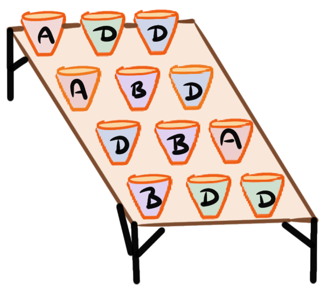
Wir haben einen Tisch und stellen Töpfe mit Pflanzen auf den Tisch. Jeder Topf erhält zufällig eine Behandlung. Wir haben gleich viele Töpfe mit Pflanzen für jede Behandlung.
Wir haben einen Stall mit Buchten für Schweine. Jede Bucht erhält eine zufällige Behandlung. Wir haben gleich viele Buchten für jede Behandlung.
Wir haben ein Feld und erschaffen Parzellen auf dem Feld. Auf jeder Parzelle wird zufällig eine Variante ausgebracht. Wir haben geich viele Parzellen für jede Variante.
Schauen wir uns das Complete randomized design einmal an einem konkreten Beispiel an. Wir nutzen dafür einen Faktor mit der Behandlung. Die Behandlung hat vier Level mit den einzelnen Leveln \(A\), \(B\), \(C\) und \(D\).
47.2.1 Visualisierung
In Abbildung 47.2 sehen wir die Visualisierung unseres Versuches. Wir haben einen großen Raun in dem sich zufällig die Level der Behandlung drauf verteilen. Hierbei ist es wichtig zu verstehen, dass die Anordnung rein zufällig ist. Wir sehen, dass jedes Level der Behandlung mit \(n = 5\) auf das Feld aufgebracht wurde. Wir haben also ein balanciertes Design mit \(N = 20\) Beobachtungen. Wir könnten hier auch einen Tisch mit \(n=20\) Pflanzentöpfen vorliegen haben oder einen Stall mit \(n = 20\) Buchten.

47.2.2 Daten
Im Folgenden bauen wir uns die Daten für das Complete randomized design. Dafür nuten wir die Funktion rnorm(). Die Funktion rnorm() erlaubt es aus einer Normalverteilung n Beobachtungen mit einem Mittelwert mean und einer Standardabweichung sd zu ziehen. Wir erschaffen uns so vier Behandlungsgruppen \(A\) bis \(D\) mit jeweils unterschiedlichen Mittelwerten von \(\bar{y}_A = 10\), \(\bar{y}_B = 12\), \(\bar{y}_C = 16\) und \(\bar{y}_D = 20\) sowie homogenen Varianzen mit \(s_A = s_B = s_C = s_D = 2\). Jede Behandlung hat \(n = 5\) Beobachtungen. Wir haben also ein balanziertes Design vorliegen.
Schauen wir uns einmal die Daten an, die wir in R erhalten. Das Objekt crd_tbl ist ein tibble in Long-Format nach der Anwendung der Funktion gather(). Wir haben auch die Spalte trt für die Behanldung als Faktor umgewandelt.
crd_tbl# A tibble: 20 × 2
trt rsp
<fct> <dbl>
1 A 12.3
2 A 11.0
3 A 13.4
4 A 13.2
5 A 4.27
6 B 12.2
7 B 11.4
8 B 15.4
9 B 9.51
10 B 11.9
11 C 13.1
12 C 15.4
13 C 16.3
14 C 19.0
15 C 19.4
16 D 20.9
17 D 17.8
18 D 20.6
19 D 24.6
20 D 17.5 Wir haben also \(N = 20\) Beobachtungen vorliegen. Wir immer ist es schwer eine Datentabelle zu erfasen. Daher schauen wir uns die Daten einmal in Abbildung 47.3 als Boxplots an. Wir wolllen uns noch die Punkte zusätzlich anzeigen lassen. bei der geringen Anzahl an Beobachtungen wäre ein Dotplot oder ein Scatterplot auch eine Möglichkeit.
ggplot(crd_tbl, aes(trt, rsp, fill = trt)) +
theme_bw() +
geom_boxplot() +
geom_jitter(width = 0.2, shape = 4, size = 3) +
theme(legend.position = "none") +
scale_fill_okabeito() 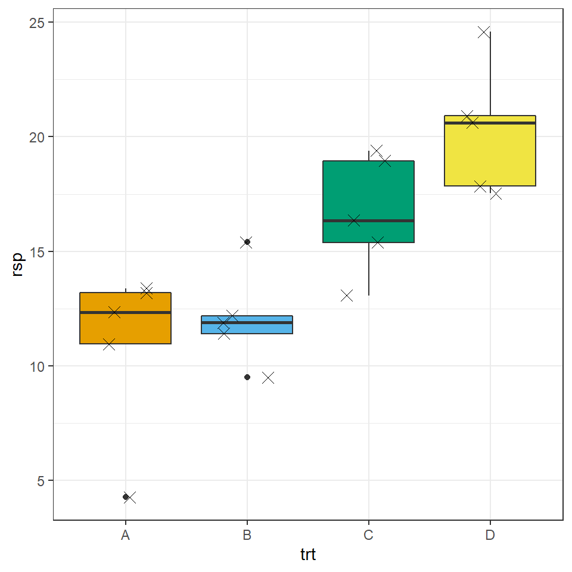
Wir erinnern uns, dass die Daten alle varianzhomogen und normalverteilt sind. Wir haben die Daten so erschaffen. Dennoch wirken die Boxplots so, als würde teilweise eine schiefe Verteilung vorliegen. Bei so wenigen Beobachtungen ist es immer schwer, für oder gegen eine Verteilung zu argumentieren. Wir bleiben bei einer Normalverteilung, wenn wir glauben, dass das \(y\) approimativ normalverteilt ist. Wir schreiben dann, dass wir ein normalverteiltes \(y\) annehmen.
47.2.3 Modellierung
Im Folgenden wollen wir die Daten modellieren. Das heist wir wollen eine Linie durch eine multidimensionale Punktewolke zeichnen. Daher auch lineares Modell oder eben durch die Funktion lm() in R für linear model. Wir nutzen das Paket parameters und die Funktion model_parameters() um uns die Parameter des Modells auszugeben. Wir könnten auch die Funktion tidy() nutzen, aber wir erhalten durch die Funktion model_parameters() etwas mehr Informationen und bessere Spaltenüberschriften.
Wir bauen das Modell in folgender Form. Wir haben ein numerisches Outcome \(y\) sowie einen Faktor \(f_1\).
\[ y \sim f_1 \]
Nun können wir das abstrakte Modell in die Daten übersetzen und erhalten folgendes Modell.
\[ rsp \sim trt \]
Das heist, unsere numerische Variable rsp hängt ab von unserer faktoriellen Variable trt. Wir müssen immer wissen, wie die Spaltennamen in unserem Datensatz crd_tbl lauten sonst kann R die Spalten nicht finden.
fit_crd <- lm(rsp ~ trt, crd_tbl)
fit_crd %>% model_parameters()Parameter | Coefficient | SE | 95% CI | t(16) | p
------------------------------------------------------------------
(Intercept) | 10.83 | 1.30 | [ 8.07, 13.59] | 8.33 | < .001
trt [B] | 1.25 | 1.84 | [-2.65, 5.15] | 0.68 | 0.506
trt [C] | 5.80 | 1.84 | [ 1.90, 9.70] | 3.15 | 0.006
trt [D] | 9.47 | 1.84 | [ 5.57, 13.37] | 5.15 | < .001
Uncertainty intervals (equal-tailed) and p-values (two-tailed) computed
using a Wald t-distribution approximation.Überlege mal, was die Spalte Coefficient aussagen möchte. Wir erhalten den (Intercept) mit \(10.38\) und damit den MIttelwert der Gruppe \(A\). In den folgenden Zeilen sind die Änderungen zu dem (Intercept) und damit zu der Gruppe \(A\) dargestellt. Da wir nur eine sehr kleine Anzhl an Beoabchtungen haben, haben wir hier auch Abweichungen zu den voreingestellten Mittelwerten und Standardabweichungen. Wir schauen uns ja auch nur eine Realisierung von möglichen Daten \(D\) an. Wir sehen, dass alle Koeffizienten signifikant und damit unterschiedlich von der Null sind. Der \(p\)-Wert ist kleiner als das Signiifkanzniveau von \(\alpha\) gleich 5%.
Wir können jetzt nochmal überprüfen, ob die Residuen die Annahme der Varianzhomogenität erfüllen.
fit_crd %>% check_homogeneity()OK: There is not clear evidence for different variances across groups (Bartlett Test, p = 0.737).Sowie ob die Residuen normalverteilt sind.
fit_crd %>% check_normality()OK: residuals appear as normally distributed (p = 0.620).Da wir ja hiermit nur eine Zeile Text produziert haben und darübr hinaus wir gerne uns Dinge anschauen, können wir auch die Residuen einmal visualisieren. In Abbildung 47.4 sehen wir den QQ-Plot der Residuen sowie die Verteilung unserer Residuen in einem Desnityplot. Wir sehen, dass die Residuen einer Normalverteilung folgen.
check_model(fit_crd, check = c("qq", "normality"))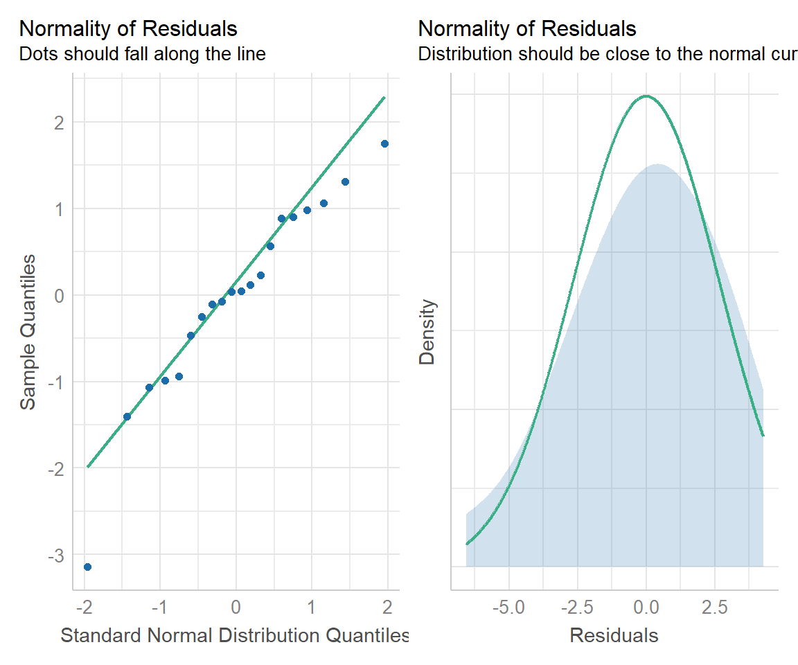
Wunderbar. Wir können jetzt eine Varianzanalyse und dann eine Mittelwertsvergleich durchführen. Achtung, wir können uns hier auch etwas in die Ecke testen. Wenn wir nur lange genug neue Daten generieren, werden wir irgendwann auch einen Datensatz finden, der die Varianzhomogenität und die Normalverteilung ablehnt. Das liegt in der Theorie des statistischen Testens sowie der kleinen Fallzahl verborgen. Deshalb können wir im Zweifel gerne einmal deine Vortests in dem R Tutorium oder in einer statistischen Beratung diskutieren.
47.2.4 Varianzanalyse und Mittelwertsvergleich
Die einfaktorielle Varianzanalyse ist ziemlich einfach und ergibt sich fast von alleine. Wir nehmen das Objekt des Modells und pipen das Modell in die Funktion anova(). Wir lassen uns dann wieder die Modellparameter der ANOVA widergeben.
res_anova <- fit_crd %>%
anova()
res_anova %>% model_parameters()Parameter | Sum_Squares | df | Mean_Square | F | p
-----------------------------------------------------------
trt | 283.24 | 3 | 94.41 | 11.16 | < .001
Residuals | 135.35 | 16 | 8.46 | |
Anova Table (Type 1 tests)Wir sehen, dass der Faktor Behandlung signifkant ist, da der \(p\)-Wert kleiner ist als das Signifkanzniveau \(\alpha\) gleich 5%. Wir können damit die Nullhypothese ablehnen, wir haben zumindestens einen paarweisen Gruppenunterschied in der Behandlung. Welchen wissen wir nicht, dafür machen wir dann die paarweisen Vergleiche. Eigentlich können wir uns in diesem simplen Fall die ANOVA schhenken und gleich den Mittelwertsvergleich rechnen. Aber das es Usus ist und auch in vielen Abschlussarbeiten verlangtt wird, machen wir hier es einfach mal gleich mit.
Jetzt brauchen wir nur noch die Effektstärke der ANOVA, also wieviel Varianz eigentlich der Faktor Behandlung erklärt. Dfür nutzen wir die Funktion eta_squared() aus dem Paket effectsize.
res_anova %>% eta_squared(partial = FALSE)# Effect Size for ANOVA (Type I)
Parameter | Eta2 | 95% CI
-------------------------------
trt | 0.68 | [0.38, 1.00]
- One-sided CIs: upper bound fixed at [1.00].Mit einem \(\eta^2\) von \(0.86\) wissen wir, dass 86% der Varianz von dem Faktor Behandlung erklärt wird. Das wundert uns nicht, denn wir haben ja nur den Faktor Behandlung in unseren Daten aus denen sich unser Outcome ergibt.
Nachdem wir kurz die ANOVA gerechnet haben, wollen wir noch den Mittelwertsvergleich rechnen. Wir nutzen dazu das Paket emmeans. Wir müssen der Funktion emmeans() ein Objekt aus einem Modell übergeben und der Funktion mitteilen, was der Faktor ist mit dem der Vergleich gerechnet werden soll. Wir haben hier den Faktor trt vorliegen und wollen einen parweisen Vergleich über alle Level des Faktors rechnen.
res_crd <- fit_crd %>%
emmeans(~ trt) Wir haben die Ausgabe der Funktion emmeans() in dem Objekt res_crd gespeichert und nutzen das Objekt zuerst um einmal die Ausgabe für das comapct letter display zu erhalten. Als Adjustierung des \(\alpha\) Fehlers nutzen wir die Adjustierung nach Bonferroni. Es sind auch andere Adjustierungen möglich, aber aus Gründen der Einfachheit nehmen wir hier mal den Klassiker der Adjustierung. Je nach Fragestellung gibt es sicherlich auch eine bessere Alternative für Bonferroni.
res_crd_cld <- res_crd %>%
cld(adjust = "bonferroni", Letters = letters) %>%
tidy() %>%
select(trt, estimate, conf.low, conf.high, .group) %>%
mutate(across(where(is.numeric), round, 2))Nachdem wir noch ein wenig gerundet haben und die Spalten passend gewählt, erhalten wir dann folgende Ausgabe.
res_crd_cld # A tibble: 4 × 5
trt estimate conf.low conf.high .group
<chr> <dbl> <dbl> <dbl> <chr>
1 A 10.8 7.17 14.5 " a "
2 B 12.1 8.42 15.7 " ab "
3 C 16.6 13.0 20.3 " bc"
4 D 20.3 16.6 24.0 " c"Wir nutzen die Ausgabe res_crd_cld direkt in der Abbildung 47.5 um uns das compact letter display zusammen mit den Daten und den entsprechenden 95% konfidenzintervallen anzeigen zu lassen. Der Code ist etwas länger, da wir hier verschiedene Schichten von einem geom übereinander legen müssen.
ggplot() +
theme_bw() +
geom_point(data = crd_tbl, aes(x = trt, y = rsp, fill = trt)) +
geom_text(data = res_crd_cld,
aes(x = trt , y = estimate, label = .group),
position = position_nudge(x = 0.2), color = "red") +
geom_errorbar(data = res_crd_cld,
aes(ymin = conf.low, ymax = conf.high, x = trt),
color = "red", width = 0.1,
position = position_nudge(x = 0.1)) +
geom_point(data = res_crd_cld,
aes(x = trt , y = estimate),
position = position_nudge(x = 0.1), color = "red") +
theme(legend.position = "none") +
labs(x = "Behandlung", y = "Gewicht [kg/ha]",
caption = "Schwarze Punkte stellen die Rohdaten dar.
Rote Punkte und Fehlerbalken stellen bereinigte Mittelwerte mit 95% Konfidenzgrenzen pro Behandlung dar.
Mittelwerte, mit einem gemeinsamen Buchstaben, sind nicht signifikant unterschiedlich.")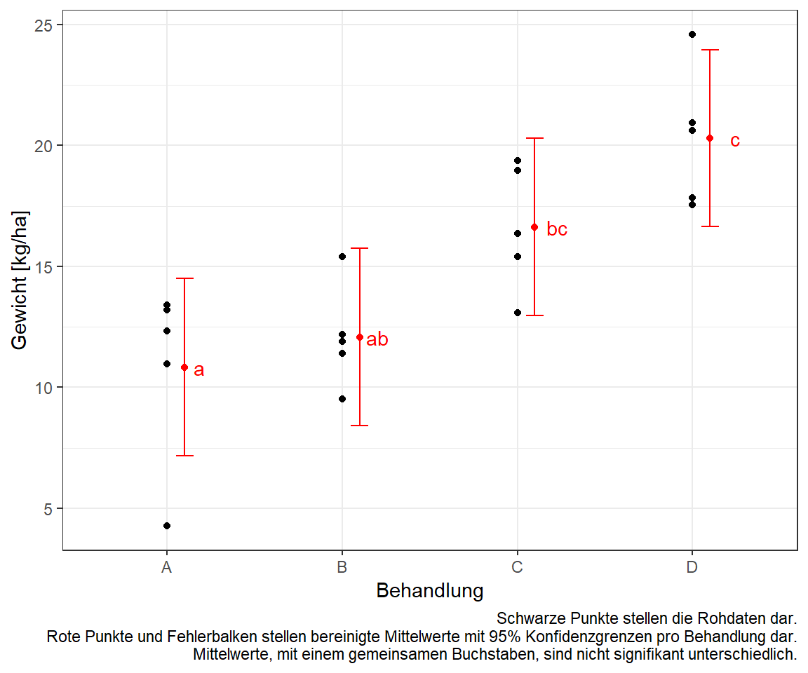
Wi sehen an dem compact letter display, dass sich die Behandlung \(A\) von der Behandlung \(B\), \(C\) und \(D\) unterscheidet. Die Behandlung \(B\) und \(C\) sind gleich. Die Behandlung \(C\) unterschdeit sich von all den anderen Behandlungen. Wir erinnern uns, wenn die Buchstaben in dem compact letter display gleich sind, dann können wie die Nullhypothese für diese Vergleiche nicht ablehnen. Wir haben keinen signifikanten Unterschied vorliegen.
Nun ist es so, dass wir meistens noch die \(p\)-Werte für die paarweisen Vergleich sowie die 95% Konfidenzintervalle darstellen wollen. Wir nutzen dafür die Funktion contrast() aus dem Paket emmeans. Danach müssen wir noch Spalten auswählen und die \(p\)-Werte über die Funktion pvalue() aus dem Paket scales schöner formatieren. Wir erhalten dann das Objekt res_crd_tbl.
res_crd_tbl <- res_crd %>%
contrast(method = "pairwise") %>%
tidy(conf.int = TRUE) %>%
mutate(p.value = pvalue(adj.p.value),
across(where(is.numeric), round, 2)) %>%
select(contrast, estimate, p.value,
conf.low, conf.high) In dem Objekt res_crd_tbl finden wir dann die \(p\)-Werte für alle paarweisen Vergleiche sowie die 95% Konfidenzintevalle.
res_crd_tbl# A tibble: 6 × 5
contrast estimate p.value conf.low conf.high
<chr> <dbl> <chr> <dbl> <dbl>
1 A - B -1.25 0.903 -6.51 4.01
2 A - C -5.8 0.028 -11.1 -0.54
3 A - D -9.47 <0.001 -14.7 -4.21
4 B - C -4.55 0.103 -9.81 0.71
5 B - D -8.22 0.002 -13.5 -2.96
6 C - D -3.67 0.231 -8.93 1.59Hier sehen wir dann die \(p\)-Werte für alle paarweisen Vergleiche und können dann die Entscheidung gegen die Nullhypothese für jeden der Kontraste einmal durchführen. Wir sehen, dass wir für alle Vergleiche die Nullhypothese ablehnen können, bis auf den Vergleich zwischen der Behandlung \(B\) und der Behandlung \(C\).
In der Abbildung 47.6 sehen wir die 95% Konfidenzintervalle für alle Vergleiche einmal dargestellt. Da wir es hier mit einem Mittelwertsvergleich zu tun haben, ist die Entscheidungsregel gegen die Nullhyppthese, dass wir ein signifikantes Konfidenzintervall vorliegen haben, wenn die Null nicht im Konfidenzintervall enthalten ist.
ggplot(res_crd_tbl, aes(contrast, y=estimate, ymin=conf.low, ymax=conf.high)) +
geom_hline(yintercept=0, linetype="11", colour="grey60") +
geom_errorbar(width=0.1) +
geom_point() +
coord_flip() +
theme_bw() +
labs(x = "Vergleich", y = "Mittelwertsunterschied des Gewichtes [kg/ha]",
caption = "Schwarze Punkte stellen die bereinigten Mittelwertsunterschiede mit 95% Konfidenzgrenzen dar.
Enthält ein 95% Konfidenzintervalle die 0 ist es nicht signifikant unterschiedlich.")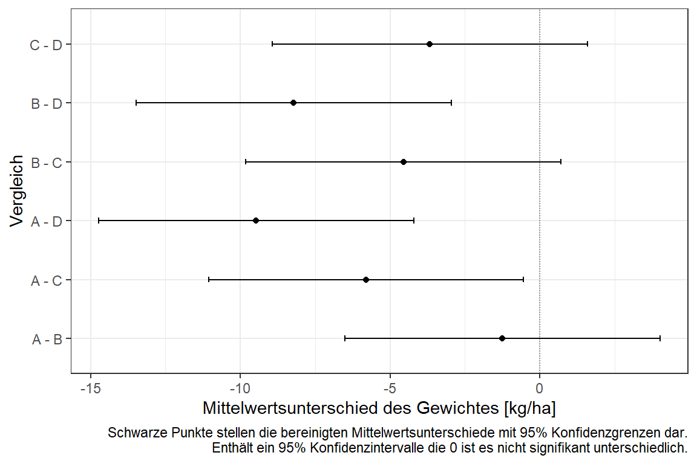
47.3 Randomized complete block design (RCBD)
Das randomisierte, vollständige Blockdesign (eng. randomized complete block design) ist das Design, wenn es darum geht für verschiedene Räume die Varianz zu adjustieren bzw. zu modellieren. Was meinen wir mit Räumen? Wir meinen damit verschiedene Ställe, verschiedene Felder oder aber verschiedene Tische. Wir nennen diese zusätzlichen Beobachtungsräume auch Block.
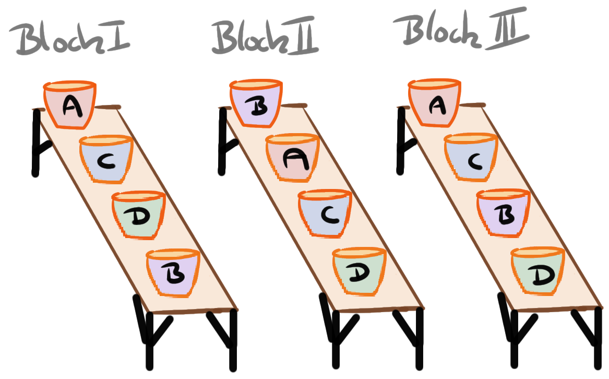
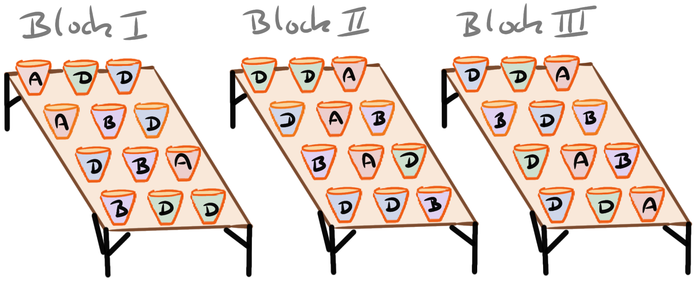
Wichtig ist zu unterschieden, wir pro Block nur einmal ein Level der Behandlung vorliegen haben. Dann hätten wir nämlich nur einen Topf mit Behandlung pro Block wie in Abbildung 47.7 (a) dargestellt. Damit haben wir den Block als Wiederholung. Oder wir haben ein Complete randomized design in Blöcken wiederholen vorliegen. Dann haben wir nämlich pro Block mehrere Wiederholungen der Behandlung wie in Abbildung 47.7 (b) veranschaulicht. Wir schauen uns erstmal den ersten Fall an. Das heist im Prinzip, dass unser Block die Wiederholung ist.
Hier ein paar Beispiele in Prosa, wie so ein Randomized complete block design konstruiert sein könnte.
Wir haben drei Tische und auf jeden der Tische steht zufällig vier ein Töpfe mit je einer Behandlung
Wir haben drei Ställe und in jedem Stall werden vier Buchten mit jeweils einer Behandlung genutzt.
Wir haben drei Felder mit jeweils vier Parzellen die zufällig mit jeweils einer der Behandlungen versehen werden.
Wir können natürlich auch auf den Tischen mehrere Wiederholungen einer Behandlung haben. Dann wird der Datensatz nur größer, aber die Auswertung unterschiedet sich nicht. Wir haben dann mehr Beobachtungen pro Block und Behandlung.
47.3.1 Visualisierung
In der Abbildung 47.8 sehen wir eine Realisierung des Randomized complete block design. Wir haben insgesamt drei Blöcke vorliegen mit Block I, Block II und Block III. In jedem Block haben wir die Behandlungen \(A\), \(B\), \(C\) und \(D\) zufällig randomisiert. In jedem Block haben wir genau einmal ein Level der Behandlung vorliegen.
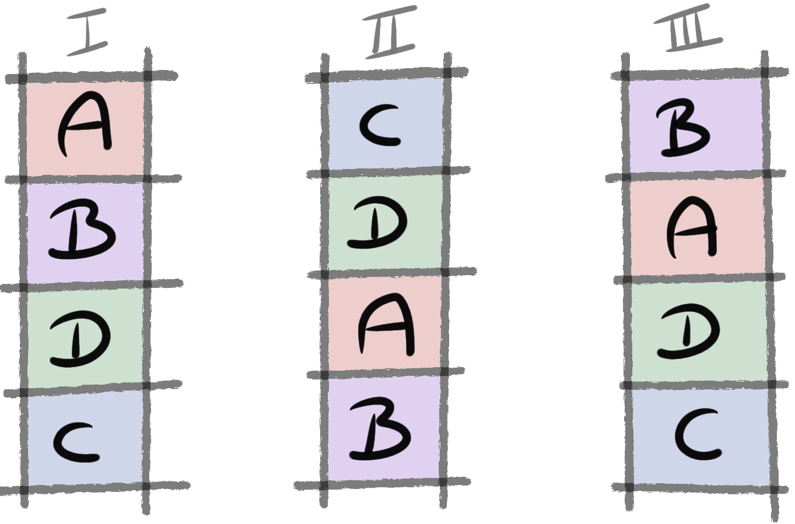
47.3.2 Daten
Im Folgenden generieren wir uns die Daten für das Randomized complete block design. Wir wissen, dass in jedem Block die Behandlung genau einmal vorkommt. Um diese Datenstruktur mit zwei Faktoren nachzubauen, können wir die Funktion expand_grid() nutzen. Wir definieren zuerst, dass wir vier Behandlungslevel wollen und für jedes Behandlungslevel dann die drei Level des Blocks. Hier muss ich auch immer wieder rumspielen und probieren, bis ich die Daten dann zu dem Design passend habe. Wir erstellen uns so das Objekt factor_tbl.
set.seed(20221001)
factor_tbl <- expand_grid(trt = 1:4, block = 1:3) %>%
mutate(trt = factor(trt, labels = c("A", "B", "C", "D")),
block = factor(block, labels = as.roman(1:3)))
factor_tbl# A tibble: 12 × 2
trt block
<fct> <fct>
1 A I
2 A II
3 A III
4 B I
5 B II
6 B III
7 C I
8 C II
9 C III
10 D I
11 D II
12 D III Wir sehen, dass jede Behandlung in allen drei Level des Blocks hat. Das entspricht unser Abbildung 47.8 und somit können wir uns darum kümmern, den Leveln der Behandlung und des Blocks einen Effekt zuzuweisen. Dafür brauchen wir die Modellmatrix, die beschreibt, wie sich für jede Beobachtung die Effekte zum Outcome rsp aufsummieren. Nicht jede Beobachtung ist in jedem Block in jeder Behandlung vertreten. Genau genommen hat jede Beobachtung nur eine einzige Behandlung/Block-Kombintation. Wir sehen diese Kombination dann in der Modellmatrix.
model_mat <- factor_tbl %>%
model_matrix(~ trt + block) %>%
as.matrix()
model_mat (Intercept) trtB trtC trtD blockII blockIII
[1,] 1 0 0 0 0 0
[2,] 1 0 0 0 1 0
[3,] 1 0 0 0 0 1
[4,] 1 1 0 0 0 0
[5,] 1 1 0 0 1 0
[6,] 1 1 0 0 0 1
[7,] 1 0 1 0 0 0
[8,] 1 0 1 0 1 0
[9,] 1 0 1 0 0 1
[10,] 1 0 0 1 0 0
[11,] 1 0 0 1 1 0
[12,] 1 0 0 1 0 1Wir sehen in der Modellmarix in jeder Zeile eine zukünftige Beobachtung. In den Spalten wird angegeben zu welchen Faktorleveln die Beobachtung gehört. Dabei bedeutet eine 1 ein Ja und eine 0 ein Nein. Die Beobachtung in der Zeile 5 wird zu Behandlungslevel \(B\) und Block \(II\) gehören.
Wir legen jetzt folgende Effekte für die einzelnen Behandlungslevel fest. Für den Intercept und damit auch für die Behandlung \(A\) auf \(\beta_{0} = \beta_{A} = 20\). Das Behandlunsglevel \(B\) wird auf \(\beta_{B} = 15\), die Behandlung \(C\) auf \(\beta_{C} = 10\) sowie die Behandlung \(D\) auf \(\beta_{D} = 5\) gesetzt. Um die Sachlage zu vereinfachen setzen wir die Effekte der Blöcke auf \(\beta_{0} = \beta_{I} = 0\) sowie \(\beta_{II} = 0\) und \(\beta_{III} = 0\). Wir haben also faktisch keinen Effekt der Blöcke. Es ist egal welchen Tisch wir benutzen, die Effekte der Behandlung sind immer die Gleichen. Wenn wir die Daten so bauen würden, dann erhalten wir die Spalte rsp_eff in dem Datensatz rcbd_tbl. Wir haben keine Varianz. Deshalb müssen wir noch die Residuen mit \(\epsilon \sim \mathcal{N}(0, 2)\) auf die Werte in der Spalte rsp_eff addieren. Wir erhalten die Spalte rsp für die Auswertung.
rcbd_tbl <- factor_tbl %>%
mutate(rsp_eff = as.numeric(model_mat %*% c(20, 15, 10, 5, 0, 0)),
rsp = rsp_eff + rnorm(n(), 0, 2))
rcbd_tbl# A tibble: 12 × 4
trt block rsp_eff rsp
<fct> <fct> <dbl> <dbl>
1 A I 20 19.8
2 A II 20 17.6
3 A III 20 18.2
4 B I 35 34.4
5 B II 35 33.9
6 B III 35 32.3
7 C I 30 28.4
8 C II 30 29.5
9 C III 30 29.5
10 D I 25 23.6
11 D II 25 24.9
12 D III 25 23.0In Tabelle 47.1 sehen wir nochmal den Zusammenhang zwischen den generierten Daten und den entsprechenden berechneten Mittelwerten je Behandlungsgruppe. Wir berechnen den Mittelwert auf der Spalte rsp_eff. Wir sehen, dass wir die voreingestellten Mittelwerte in den Daten widerfinden.
| Factor trt | Mean of level | Difference to level A | Beta |
|---|---|---|---|
| A | 20 | 0 | 20 |
| B | 35 | 15 | 15 |
| C | 30 | 10 | 10 |
| D | 25 | 5 | 5 |
Abschließend wollen wir uns die generierten Daten nochmal als einen Dotplot anschauen. Wir wollen dafür einen Dotplot nutzen, da wir mit drei Beobachtungen pro Level der Behandlung keinen sinnvollen Boxplot zeichnen können.
ggplot(rcbd_tbl, aes(trt, rsp, fill = block)) +
theme_bw() +
geom_dotplot(binaxis = "y", stackdir = "center",
position = position_dodge(width = 0.4)) +
ylim(15, 40) +
scale_fill_okabeito() +
labs(fill = "Block", x = "Behandlung", y = "Outcome")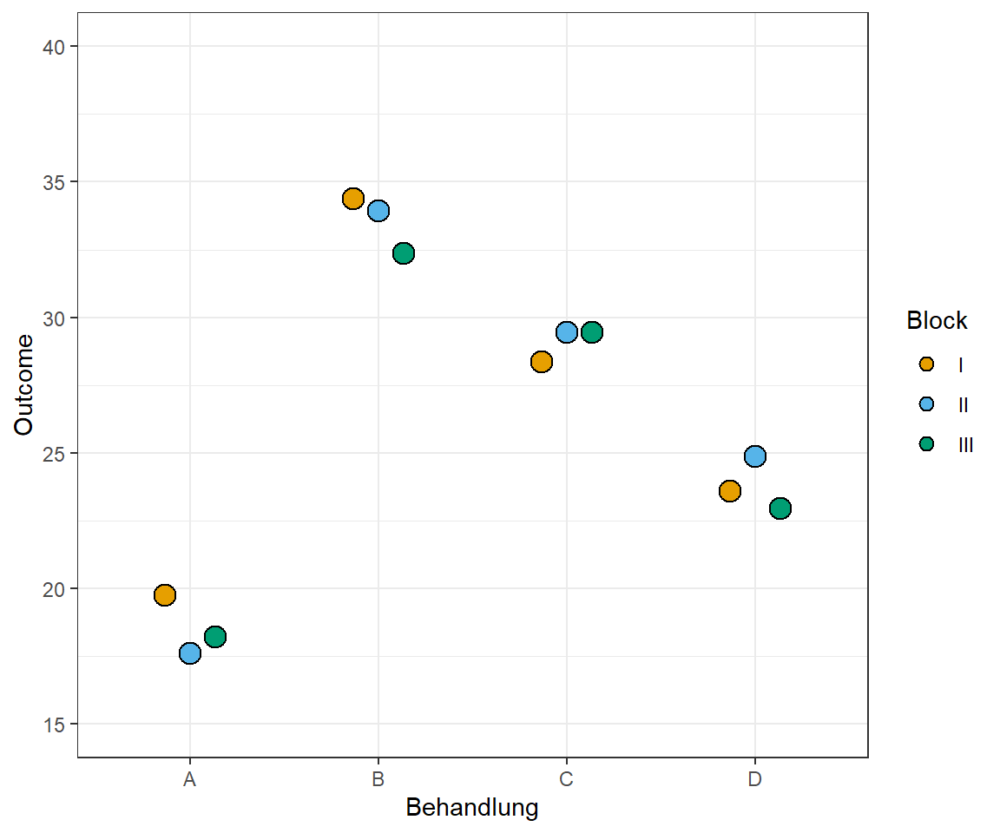
Wir können die Daten aus dem Datensatz rcbd_tbl jetzt für die Varianzanalyse und Mittelwertsvergleich nutzen.
47.3.3 Modellierung
Im Folgenden wollen wir die Daten modellieren. Das heist wir wollen eine Linie durch eine multidimensionale Punktewolke zeichnen. Daher auch lineares Modell oder eben durch die Funktion lm() in R für linear model. Wir nutzen das Paket parameters und die Funktion model_parameters() um uns die Parameter des Modells auszugeben. Wir könnten auch die Funktion tidy() nutzen, aber wir erhalten durch die Funktion model_parameters() etwas mehr Informationen und bessere Spaltenüberschriften.
Wir bauen das Modell in folgender Form. Wir haben ein numerisches Outcome \(y\) sowie einen Faktor \(f_1\) sowie einem Faktor für den Block \(b_1\).
\[ y \sim f_1 + b_1 \]
Nun können wir das abstrakte Modell in die Daten übersetzen und erhalten folgendes Modell.
\[ rsp \sim trt + block \]
Das heist, unsere numerische Variable rsp hängt ab von unserer faktoriellen Variable trt und der faktoriellen Blockvariable block. Wir müssen immer wissen, wie die Spaltennamen in unserem Datensatz crd_tbl lauten sonst kann R die Spalten nicht finden.
fit_rcbd <- lm(rsp ~ trt + block, rcbd_tbl)
fit_rcbd %>% model_parameters()Parameter | Coefficient | SE | 95% CI | t(6) | p
------------------------------------------------------------------
(Intercept) | 18.79 | 0.70 | [17.08, 20.51] | 26.75 | < .001
trt [B] | 15.03 | 0.81 | [13.04, 17.01] | 18.53 | < .001
trt [C] | 10.57 | 0.81 | [ 8.59, 12.56] | 13.03 | < .001
trt [D] | 5.29 | 0.81 | [ 3.30, 7.27] | 6.52 | < .001
block [II] | -0.05 | 0.70 | [-1.77, 1.67] | -0.08 | 0.942
block [III] | -0.77 | 0.70 | [-2.49, 0.94] | -1.10 | 0.313
Uncertainty intervals (equal-tailed) and p-values (two-tailed) computed
using a Wald t-distribution approximation.Wir sehen, dass wir die Koeffizienten, die wir vorher eingestellt haben, auch hier wiederfinden. Alle Steigungen der Behandlungslevel sind signifikant. Das hilft uns aber noch nicht so richtig weiter. Wir werden gleich das Modell in einer zweifaktoriellen ANOVA und einem Mittelwertsvergleich anschauen. Vorher wollen wir einmal statistisch Testen, ob die Varianzen homogens sind. Wir können die Varianzen aber nicht über das volle Modell testen, da wir nur eine Beobachtung per Behandlung/Block-Kombintation vorliegen haben.
fit_rcbd %>% check_homogeneity()Error in bartlett.test.default(x = mf[[1L]], g = mf[[2L]]) : there must be at least 2 observations in each group
Daher schauen wir uns nur die Varianzen für die Behandlung an und nehmen an, dass die Varanzen über die Blöcke homogen sind. Wir können nur einen Faktor testen und deshalb nehmen wir den für uns wichtigeren Faktor die Behandlung.
lm(rsp ~ trt, rcbd_tbl) %>% check_homogeneity()OK: There is not clear evidence for different variances across groups (Bartlett Test, p = 0.907).Abschließend schauen wir nochmal auf die Normalverteilung der Residuen.
fit_rcbd %>% check_normality()OK: residuals appear as normally distributed (p = 0.391).In der Abbildung 47.10 sehen wir den QQ-Plot und die Verteilung der Residuen im Densityplot. Auch die Visualisierung zeigt keine Aufälligkeiten. Wir sehen, dass die Residuen einer Normalverteilung folgen.
check_model(fit_rcbd, check = c("qq", "normality"))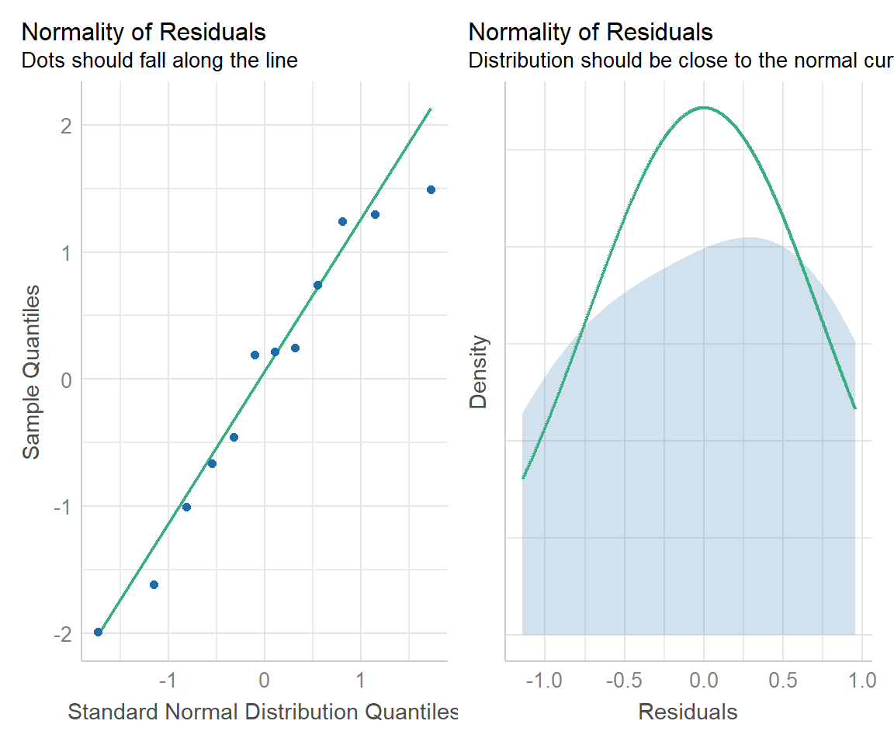
Wir können jetzt eine Varianzanalyse und dann eine Mittelwertsvergleich durchführen. Achtung, wir können uns hier auch etwas in die Ecke testen. Wenn wir nur lange genug neue Daten generieren, werden wir irgendwann auch einen Datensatz finden, der die Varianzhomogenität und die Normalverteilung ablehnt. Besonders in dem Fall, dass wir wenige Blöcke haben. Das liegt in der Theorie des statistischen Testens sowie der kleinen Fallzahl verborgen. Deshalb können wir im Zweifel gerne einmal deine Vortests in dem R Tutorium oder in einer statistischen Beratung diskutieren.
47.3.4 Varianzanalyse und Mittelwertsvergleich
Als erstes Rechnen wir eine zweifaktroielle ANOVA, da unser Modell zwei Faktoren hat. In R müssen wir dazu nur das Modell fit_rcbd in die Funktion anova() pipen. Wir erhalten dann die Ergebnisse aus der ANOVA mit der Funktion model_parameters() aus dem Paket parameters besser aufgearbeitet wieder. Die Mittelwertsunterschiede der Level der Behandlung haben wir bewusst sehr hoch angesetzt, so dass wir auf jeden Fall eine signifikante ANOVA erhalten sollen.
res_anova <- fit_rcbd %>%
anova()
res_anova %>% model_parameters()Parameter | Sum_Squares | df | Mean_Square | F | p
------------------------------------------------------------
trt | 381.24 | 3 | 127.08 | 128.72 | < .001
block | 1.50 | 2 | 0.75 | 0.76 | 0.509
Residuals | 5.92 | 6 | 0.99 | |
Anova Table (Type 1 tests)Als Ergebnis haben wir einen signifikanten Faktor Behandlung trt sowie einen nicht signifikanten Faktor Block block. Wir können die Signifkanz an dem \(p\)-Wert bestimmen. Liegt der \(p\)-Wert unter dem Signifikanzniveau von \(\alpha\) gleich 5% so können wir die Nullhypothese ablehnen. Wir haben dann mindestens einen signifikanten paarweisen Mittelwertsunterschied vorliegen.
Schauen wir uns nun noch den Anteil der erklärten Varianz an. Wir nutzen dafür den Effektschätzer \(\eta^2\).
res_anova %>% eta_squared(partial = FALSE)# Effect Size for ANOVA (Type I)
Parameter | Eta2 | 95% CI
-----------------------------------
trt | 0.98 | [0.93, 1.00]
block | 3.85e-03 | [0.00, 1.00]
- One-sided CIs: upper bound fixed at [1.00].Wir sehen, dass durch den Faktor trt mit 92% der Varianz erklärt werden. Der Faktor Block erklärt nur ca. 2% der Varianz. Beides war so zu erwarten, denn wir haben ja auch den Datensatz in dieser Form gebaut. Die Behandlung hat einen starken Effekt und der Block hat gar keinen Effekt.
Schauen wir nun auf den Mittelwertsvergleich. Wir nutzen dafür die Funktion emmeans() aus dem R Paket emmeans. Wichtig ist hier, dass wir uns jetzt die Vergleiche der Gruppen bzw. Level der Behandlung anschauen wollen.
res_rcbd <- fit_rcbd %>%
emmeans(~ trt) Als erstes nutzen wir die Ausagbe der Funktion emmeans um uns das compact letter display wiedergeben zu lassen. Wir wollen wieder die Ausgaben runden und nutzen die Adjustierung der \(p\)-Werte für multiple Vergleiche nach Bonferroni. Nochmal als Erinnerung, das compact letter display gibt uns keine \(p\)-Werte wieder sondern wir Entscheiden anhand der vergebenen Buchstaben und deren Gleichheit über ein signifikantes Ergebnis oder ein nicht signifikantes Ergebnis.
res_rcbd_cld <- res_rcbd %>%
cld(adjust = "bonferroni", Letters = letters) %>%
tidy() %>%
select(trt, estimate, conf.low, conf.high, .group) %>%
mutate(across(where(is.numeric), round, 2))
res_rcbd_cld # A tibble: 4 × 5
trt estimate conf.low conf.high .group
<chr> <dbl> <dbl> <dbl> <chr>
1 A 18.5 16.5 20.5 " a "
2 D 23.8 21.8 25.8 " b "
3 C 29.1 27.1 31.1 " c "
4 B 33.6 31.5 35.6 " d"An dem compact letter display sehen wir, dass sich alle Mittelwerte der Level der Behandlungen signifikant unterscheiden. In Abbildung 47.11 sehen wir die Daten zusammen mit dem compact letter display in einer Abbildung. Wir ändern hier das geom_point() zu geom_jitter() um ein Overplotting zu vermeiden. So können wir alle Beobachtungen als Punkte erkennen.
ggplot() +
theme_bw() +
geom_jitter(data = rcbd_tbl, aes(x = trt, y = rsp, fill = trt),
width = 0.05) +
geom_text(data = res_rcbd_cld,
aes(x = trt , y = estimate, label = .group),
position = position_nudge(x = 0.2), color = "red") +
geom_errorbar(data = res_rcbd_cld,
aes(ymin = conf.low, ymax = conf.high, x = trt),
color = "red", width = 0.1,
position = position_nudge(x = 0.1)) +
geom_point(data = res_rcbd_cld,
aes(x = trt , y = estimate),
position = position_nudge(x = 0.1), color = "red") +
theme(legend.position = "none") +
labs(x = "Behandlung", y = "Gewicht [kg/ha]",
caption = "Schwarze Punkte stellen Rohdaten dar.
Rote Punkte und Fehlerbalken stellen bereinigte Mittelwerte mit 95% Konfidenzgrenzen pro Behandlung dar.
Mittelwerte, mit einem gemeinsamen Buchstaben, sind nicht signifikant unterschiedlich.")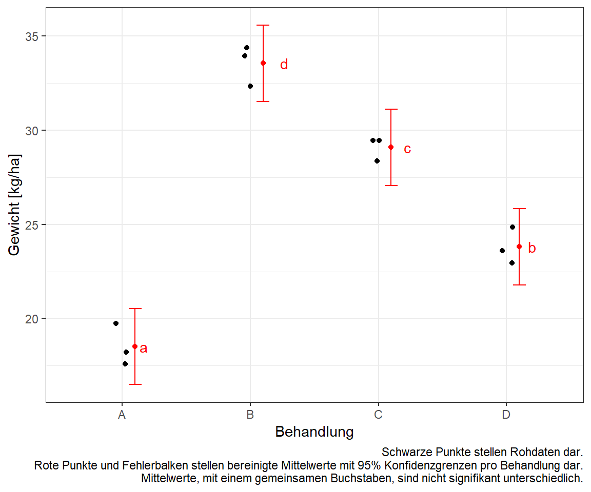
Häufig wollen wir nicht nur das compact letter display sehen sondern auch die dazugehörigen \(p\)-Werte und die entsprechenden 95% Konfidenzintervalle. Wir berechnen im Folgenden alle paarweisen Vergleiche bzw. Kontraste und lassen uns die adjustierten sowie formatierten \(p\)-Werte ausgeben. Wir runden wieder die Ausgabe.
res_rcbd_tbl <- res_rcbd %>%
contrast(method = "pairwise") %>%
tidy(conf.int = TRUE) %>%
mutate(p.value = pvalue(adj.p.value),
across(where(is.numeric), round, 2)) %>%
select(contrast, estimate, p.value,
conf.low, conf.high)
res_rcbd_tbl# A tibble: 6 × 5
contrast estimate p.value conf.low conf.high
<chr> <dbl> <chr> <dbl> <dbl>
1 A - B -15.0 <0.001 -17.8 -12.2
2 A - C -10.6 <0.001 -13.4 -7.76
3 A - D -5.29 0.003 -8.1 -2.48
4 B - C 4.46 0.006 1.65 7.26
5 B - D 9.74 <0.001 6.93 12.6
6 C - D 5.29 0.003 2.48 8.09Auch hier passen die \(p\)-Werte zu dem compact letter display. Alle Vergleiche sind signifikant. Das haben wir noch dem compact letter display auch so erwartet. Auch sehen wir das gleiche Ergebnis in Abbildung 47.12 für die 95% Konfidenzintervalle. Wir betrachten Mittelwertsunterschiede und kein Konfidenzintervall beinhaltet die Null somit sind alle Konfidenzintervalle signifikant.
ggplot(res_rcbd_tbl, aes(contrast, y=estimate, ymin=conf.low, ymax=conf.high)) +
geom_hline(yintercept=0, linetype="11", colour="grey60") +
geom_errorbar(width=0.1) +
geom_point() +
coord_flip() +
theme_bw() +
labs(x = "Vergleich", y = "Mittelwertsunterschied des Gewichtes [kg/ha]",
caption = "Schwarze Punkte stellen die bereinigten Mittelwertsunterschiede mit 95% Konfidenzgrenzen dar.
Enthält ein 95% Konfidenzintervalle die 0 ist es nicht signifikant unterschiedlich.")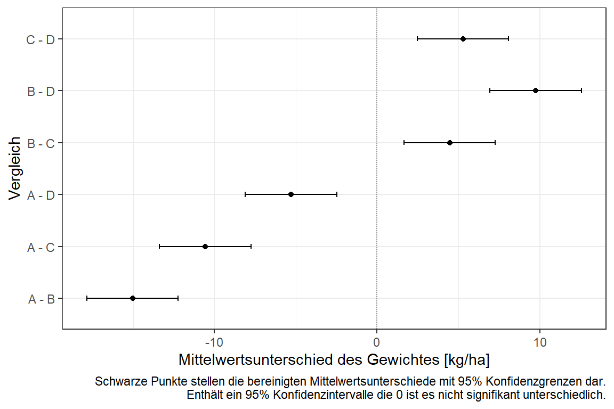
47.4 Latin square design (LSD)
47.4.1 Visualisierung
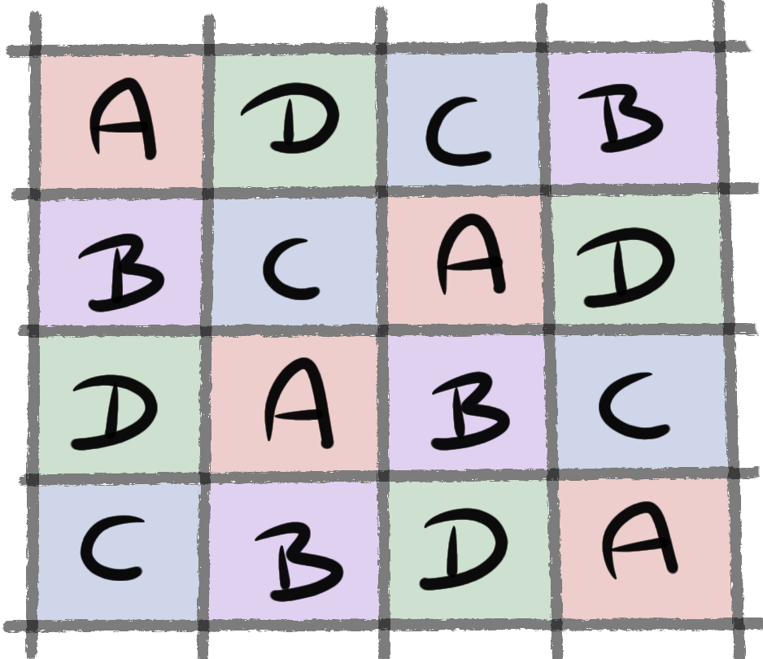
47.4.2 Daten
expand_grid(trt = 1:4, block = 1:4)# A tibble: 16 × 2
trt block
<int> <int>
1 1 1
2 1 2
3 1 3
4 1 4
5 2 1
6 2 2
7 2 3
8 2 4
9 3 1
10 3 2
11 3 3
12 3 4
13 4 1
14 4 2
15 4 3
16 4 447.4.3 Modellierung
47.4.4 Varianzanalyse und Mittelwertsvergleich
47.5 Alpha design
47.5.1 Visualisierung
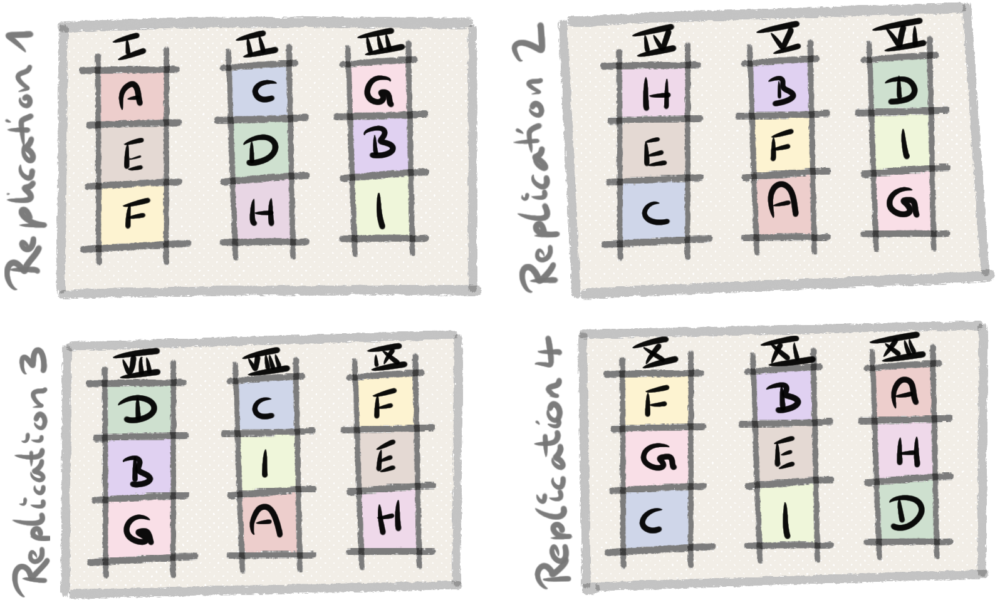
47.5.2 Daten
47.5.3 Modellierung
47.5.4 Varianzanalyse und Mittelwertsvergleich
47.6 Augmented design
47.7 Split plot design
47.7.1 Visualisierung
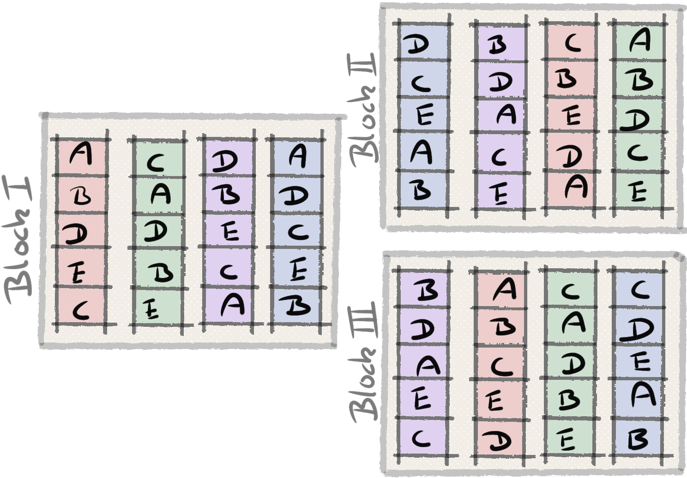